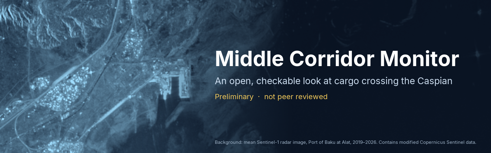
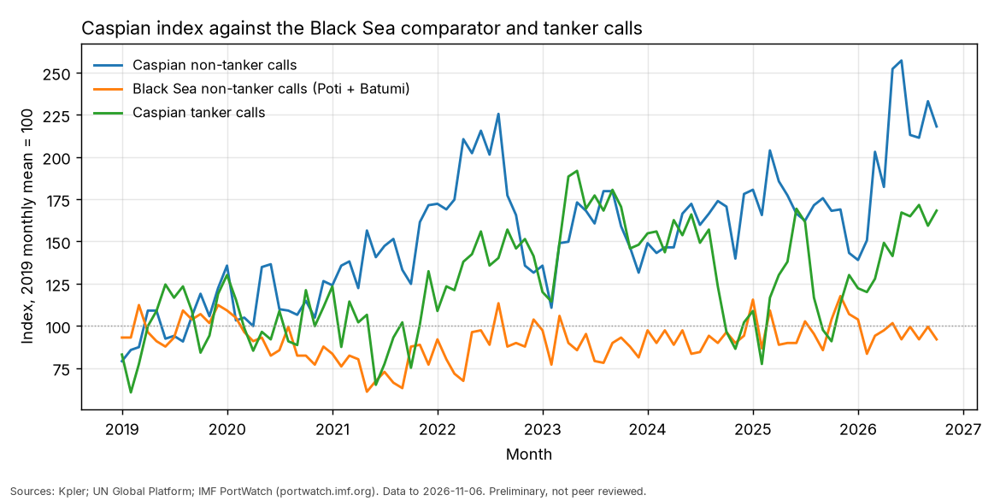
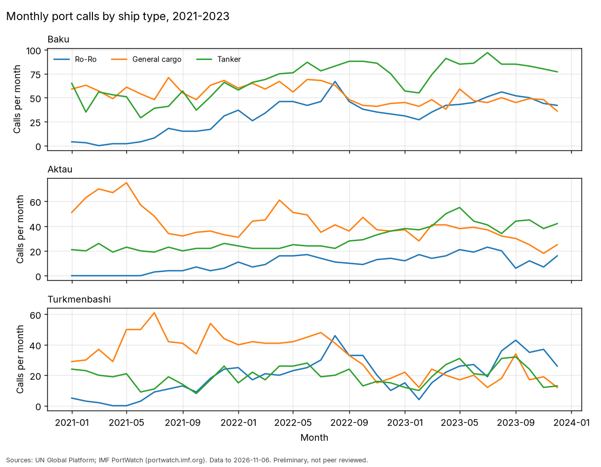

Middle Corridor Monitor
Aghasalim Mustafazada; Teymur Eyvazov (co-author to be confirmed before publication)
One frame per month. Left: radar detections at Alat (bright objects on the water, not confirmed ships). Right: the index up to that month.
A monthly count of non-tanker ship calls at Baku, Aktau and Turkmenbashi, built from IMF PortWatch data, as an open and checkable indicator of cargo crossing the Caspian leg of the Middle Corridor. Every number on this page is produced by the code in this repository from a dated data snapshot.
Last data day: 2026-11-06. Last complete month: October 2026. Data downloaded 2026-11-13T00:10:08Z.
Headline index

Latest 12 months
| Month | Non-tanker calls | Index | Ro-Ro calls | Black Sea index |
|---|---|---|---|---|
| 2025-11 | 203 | 168.9 | 54 | 117.6 |
| 2025-12 | 172 | 143.1 | 37 | 107.0 |
| 2026-01 | 167 | 139.0 | 31 | 103.7 |
| 2026-02 | 181 | 150.6 | 38 | 83.4 |
| 2026-03 | 244 | 203.1 | 79 | 94.1 |
| 2026-04 | 219 | 182.2 | 68 | 97.3 |
| 2026-05 | 303 | 252.1 | 92 | 101.6 |
| 2026-06 | 309 | 257.1 | 93 | 92.0 |
| 2026-07 | 256 | 213.0 | 78 | 99.5 |
| 2026-08 | 254 | 211.4 | 77 | 92.0 |
| 2026-09 | 280 | 233.0 | 85 | 99.5 |
| 2026-10 | 262 | 218.0 | 84 | 92.0 |
Comparator

Poti and Batumi (Black Sea, Georgia) are shown for comparison only; they are not part of the Caspian index. Tanker calls are reported separately and are not in the headline.
Checks against official figures
- The index does not track the official Trans-Caspian route total. Over 7 years both rise (correlation of levels 0.60), but year-on-year changes are unrelated (correlation -0.05, 6 pairs).
- It does not forecast Kazakhstan's monthly "cargo carried by sea transport" series. Over 30 out-of-sample months the error (RMSE, tonnes) was 144,078 with PortWatch, 104,094 using the same month a year earlier and 54,863 using the previous month.
- Where the definitions match, PortWatch is close: its ship calls at Aktau average 0.97 of the calls reported by the Kazakh maritime administration over 7 years.
Samples are short and these checks are preliminary. Full tables: outputs/tables/validate_*.csv.
What this does not measure
- Kuryk, Kazakhstan's ferry port, is not in PortWatch, so it is missing from the index.
- The area PortWatch calls "Baku Port" is not published; whether it includes Alat is unknown.
- Ferry cargo is poorly captured: rail ferries may not be classed as Ro-Ro, and PortWatch dry-cargo tonnage at Baku is several times below official figures. Calls are counted, not tonnes or containers.
- Ro-Ro calls step up four- to sixfold between 2021 and 2022 at all three ports at once. The cause is not explained (single-break estimate of the first month of the higher level: Baku 2021-12; Aktau 2022-01; Turkmenbashi 2021-11).
- No hand-validated radar (Sentinel-1) ship counts exist yet.

Data
Sources: Kpler; UN Global Platform; IMF PortWatch (portwatch.imf.org).
Daily port calls by ship type from the PortWatch Daily_Ports_Data service, ports Baku (port100), Aktau (port16), Turkmenbashi (port1330), Poti (port1016), Batumi (port127). Licence to be decided before publication.